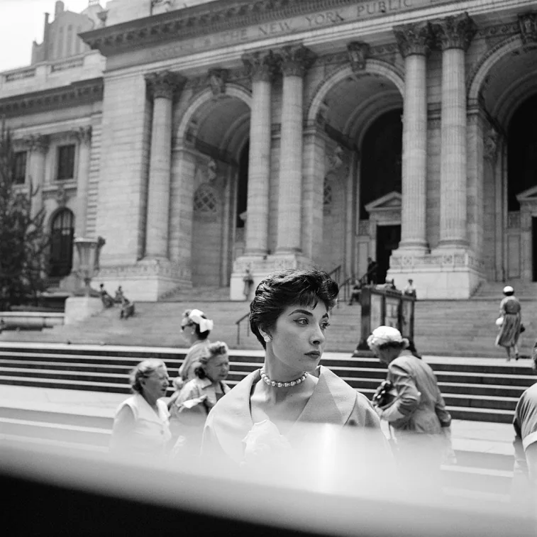
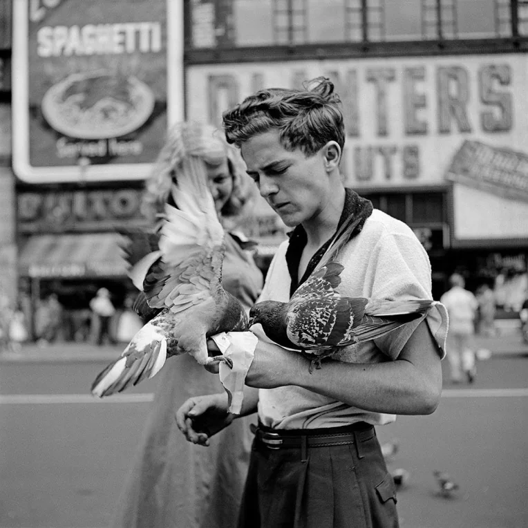
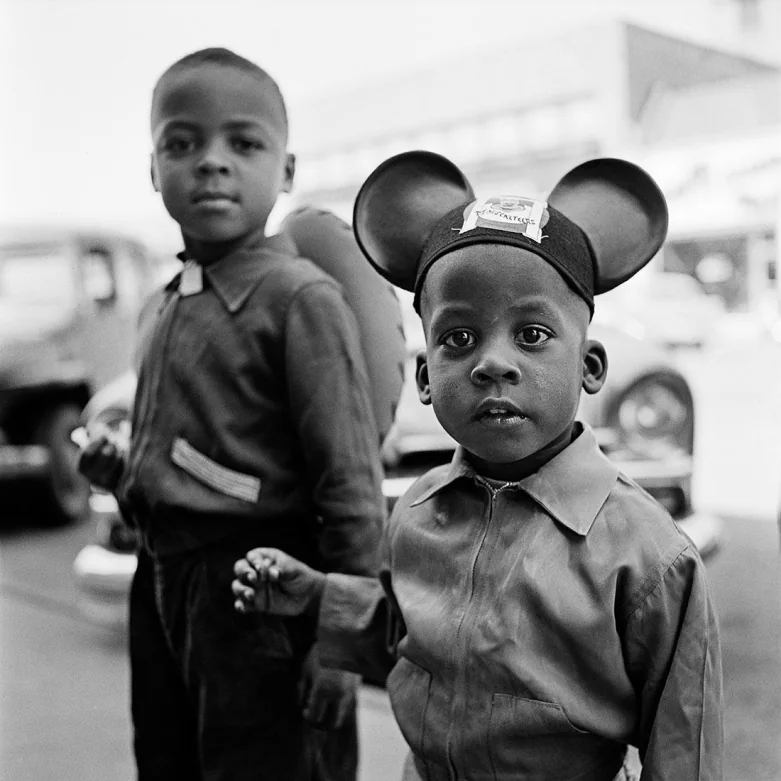
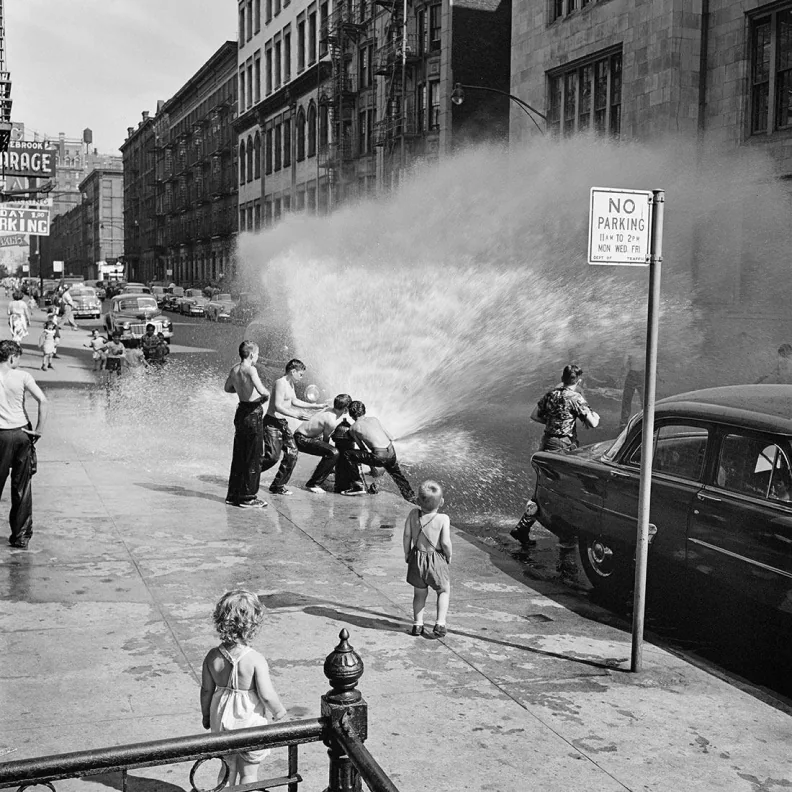
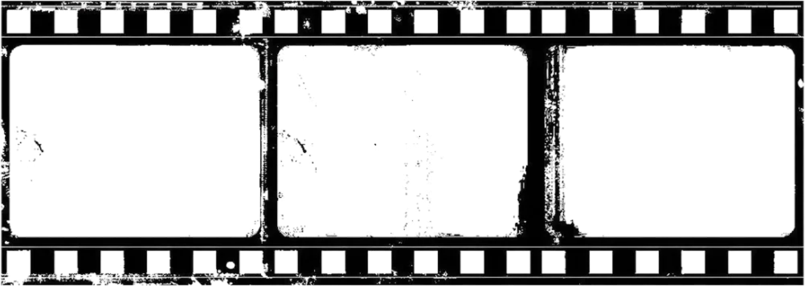
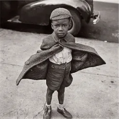
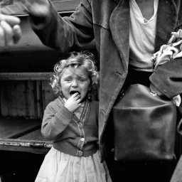

Les Œuvres de Vivian Maier
Une sélection d’épreuves argentiques et de clichés couleur tirés d’une archive de plus de 100 000 négatifs.
Galerie de photographies
-

New York, NY
VM19XXW04205-06-MC -

New York, NY
VM19XXW04206-02-MC -

Chicago, IL
VM19XXW03132-10-MC -
March 18, 1955. New York, NY
VM1955W03421-08-MC -

June 1954. New York, NY
VM1954W02925-12-MC -
1961. Chicago, IL
VM1961W00841-06-MC




